Code
library(tidyverse)
library(easystats)
library(brms)
library(ordbetareg)
library(flextable)
library(patchwork)library(tidyverse)
library(easystats)
library(brms)
library(ordbetareg)
library(flextable)
library(patchwork)# Deidentified features (one row per participant and task); see ../data/README.md
df_verbal <-
# base R's parser restores every stored value exactly (readr's can differ in the last digit)
read.csv(file.path("..", "data", "verbal.csv")) |>
as_tibble() |>
mutate(
participant = factor(participant),
source = factor(source, levels = c("patient", "control")),
ptsd = factor(ptsd, levels = c(0, 1)),
demo_sex = factor(demo_sex, levels = c("Male", "Female")),
demo_nonwhite = factor(demo_nonwhite, levels = c(FALSE, TRUE)),
task = factor(task, levels = c("Account", "Impact")),
# LIWC percentages to proportions
across(c(i, we, emo_neg, emo_pos, allnone, cogproc, Perception), \(x) x / 100),
sentiment_num = sentiment,
sentiment = factor(
sentiment_num,
levels = 1:6,
ordered = TRUE
)
) |>
arrange(participant, task)
# Effect-code every two-level factor (first level = -0.5, second = +0.5) so each main effect is averaged
# over the other factors (e.g., group = PTSD - Control averaged across tasks); interactions and predictions are unchanged
for (v in c("task", "ptsd", "demo_sex", "demo_nonwhite")) contrasts(df_verbal[[v]]) <- c(-0.5, 0.5)
dir.create("fits", showWarnings = FALSE)
df_verbal |>
select(WC:Perception, sentiment_num) |>
pivot_longer(cols = everything()) |>
ggplot(aes(x = value)) +
facet_wrap(~name, scales = "free") +
geom_histogram(bins = 30)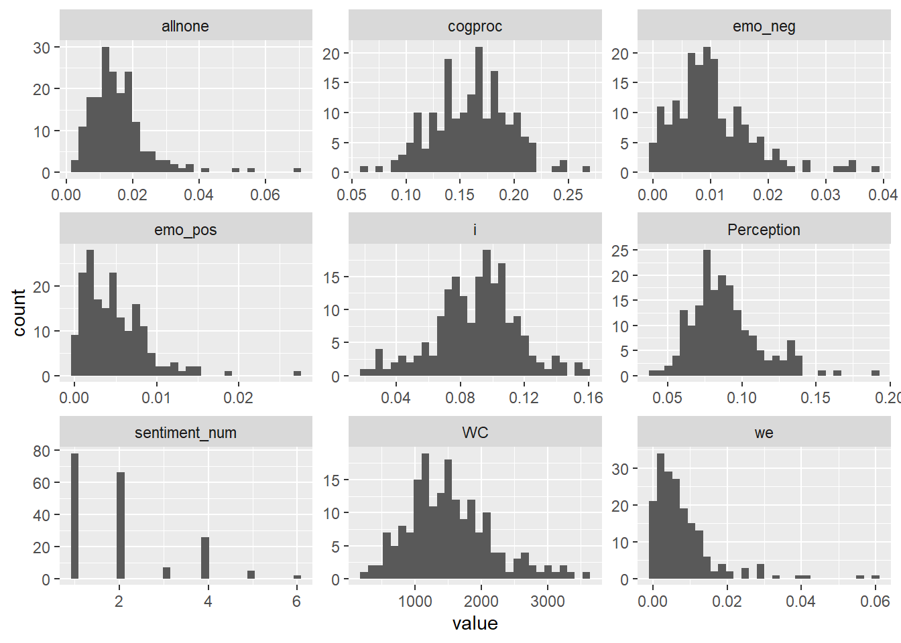
# models with divergent transitions at adapt_delta = 0.95
high_adapt <- c("we")
ob_features <- c(
"i", "we",
"emo_neg", "emo_pos",
"allnone", "cogproc",
"Perception"
)
ob_models <-
ob_features |>
set_names() |>
map(
\(feature) {
model_formula <- as.formula(
paste(feature, "~ task * ptsd + demo_age + demo_sex + demo_nonwhite + (1 | participant)")
)
ordbetareg(
formula = model_formula,
data = df_verbal,
coef_prior_mean = 0,
coef_prior_SD = 1,
seed = 2026,
chains = 4,
cores = 4,
iter = 4000,
warmup = 2000,
refresh = 0,
file = file.path("fits", feature),
control = list(adapt_delta = if (feature %in% high_adapt) 0.99 else 0.95, max_treedepth = 12),
backend = "cmdstanr"
)
}
)Running MCMC with 4 parallel chains…
Chain 4 finished in 113.6 seconds. Chain 1 finished in 115.6 seconds. Chain 3 finished in 118.4 seconds. Chain 2 finished in 121.3 seconds.
All 4 chains finished successfully. Mean chain execution time: 117.2 seconds. Total execution time: 121.6 seconds.
Running MCMC with 4 parallel chains…
Chain 3 finished in 108.4 seconds. Chain 2 finished in 124.1 seconds. Chain 1 finished in 131.2 seconds. Chain 4 finished in 132.1 seconds.
All 4 chains finished successfully. Mean chain execution time: 123.9 seconds. Total execution time: 132.3 seconds.
Running MCMC with 4 parallel chains…
Chain 2 finished in 63.7 seconds. Chain 3 finished in 65.9 seconds. Chain 4 finished in 66.1 seconds. Chain 1 finished in 70.2 seconds.
All 4 chains finished successfully. Mean chain execution time: 66.5 seconds. Total execution time: 70.4 seconds.
Running MCMC with 4 parallel chains…
Chain 1 finished in 56.3 seconds. Chain 3 finished in 56.9 seconds. Chain 2 finished in 62.6 seconds. Chain 4 finished in 63.5 seconds.
All 4 chains finished successfully. Mean chain execution time: 59.8 seconds. Total execution time: 63.8 seconds.
Running MCMC with 4 parallel chains…
Chain 1 finished in 69.8 seconds. Chain 3 finished in 69.7 seconds. Chain 2 finished in 74.1 seconds. Chain 4 finished in 74.1 seconds.
All 4 chains finished successfully. Mean chain execution time: 71.9 seconds. Total execution time: 74.4 seconds.
Running MCMC with 4 parallel chains…
Chain 3 finished in 123.7 seconds. Chain 4 finished in 123.9 seconds. Chain 1 finished in 127.3 seconds. Chain 2 finished in 135.7 seconds.
All 4 chains finished successfully. Mean chain execution time: 127.7 seconds. Total execution time: 135.9 seconds.
Running MCMC with 4 parallel chains…
Chain 4 finished in 124.7 seconds. Chain 2 finished in 127.3 seconds. Chain 1 finished in 132.2 seconds. Chain 3 finished in 136.2 seconds.
All 4 chains finished successfully. Mean chain execution time: 130.1 seconds. Total execution time: 136.4 seconds.
iwalk(
ob_models,
\(model, name) {
thisr2 <- r2(model)
cat(
"\n\n#### ",
name,
sprintf("(R2C = %0.2f, R2M = %0.2f)", thisr2$R2_Bayes, thisr2$R2_Bayes_marginal),
"\n\n"
)
table_md <- print_md(model_parameters(model))
cat(table_md, sep = "\n")
}
)| Parameter | Median | 95% CI | pd | Rhat | ESS (tail) |
|---|---|---|---|---|---|
| (Intercept) | -2.26 | (-2.43, -2.09) | 100% | 1.000 | 7015 |
| task1 | 0.08 | (1.38e-03, 0.17) | 97.69% | 1.000 | 5826 |
| ptsd1 | 0.13 | (0.01, 0.25) | 98.40% | 1.000 | 6137 |
| demo_age | -1.80e-03 | (-5.71e-03, 2.16e-03) | 81.80% | 1.000 | 6911 |
| demo_sex1 | 0.25 | (0.13, 0.37) | 100% | 1.001 | 6119 |
| demo_nonwhite1 | 0.12 | (-0.01, 0.26) | 96.53% | 1.000 | 5823 |
| task1:ptsd1 | 0.07 | (-0.10, 0.23) | 79.54% | 1.001 | 5513 |
| Parameter | Median | 95% CI | pd | Rhat | ESS (tail) |
|---|---|---|---|---|---|
| (Intercept) | -5.15 | (-5.59, -4.71) | 100% | 1.000 | 4997 |
| task1 | -0.54 | (-0.75, -0.34) | 100% | 1.000 | 5923 |
| ptsd1 | -0.03 | (-0.32, 0.26) | 58.76% | 1.001 | 4961 |
| demo_age | 8.38e-03 | (-1.19e-03, 0.02) | 95.73% | 1.000 | 6279 |
| demo_sex1 | -0.31 | (-0.60, -0.04) | 98.61% | 1.000 | 4892 |
| demo_nonwhite1 | -0.11 | (-0.49, 0.25) | 71.75% | 1.001 | 5733 |
| task1:ptsd1 | -0.19 | (-0.58, 0.22) | 81.97% | 1.000 | 4899 |
| Parameter | Median | 95% CI | pd | Rhat | ESS (tail) |
|---|---|---|---|---|---|
| (Intercept) | -4.39 | (-4.68, -4.11) | 100% | 1.000 | 6458 |
| task1 | -0.47 | (-0.64, -0.30) | 100% | 1.001 | 5830 |
| ptsd1 | 0.25 | (0.05, 0.47) | 99.10% | 1.001 | 6515 |
| demo_age | -8.04e-03 | (-0.01, -1.73e-03) | 99.38% | 1.001 | 6777 |
| demo_sex1 | 0.21 | (3.10e-03, 0.43) | 97.71% | 1.000 | 6665 |
| demo_nonwhite1 | -0.34 | (-0.61, -0.10) | 99.69% | 1.000 | 6155 |
| task1:ptsd1 | 0.51 | (0.17, 0.85) | 99.83% | 1.001 | 6521 |
| Parameter | Median | 95% CI | pd | Rhat | ESS (tail) |
|---|---|---|---|---|---|
| (Intercept) | -5.17 | (-5.54, -4.81) | 100% | 1.000 | 6322 |
| task1 | 0.26 | (0.05, 0.46) | 99.24% | 1.001 | 6389 |
| ptsd1 | 0.11 | (-0.13, 0.36) | 80.95% | 1.000 | 5958 |
| demo_age | -7.45e-04 | (-8.84e-03, 7.23e-03) | 57.01% | 1.000 | 6093 |
| demo_sex1 | 0.03 | (-0.22, 0.29) | 59.19% | 1.000 | 6200 |
| demo_nonwhite1 | 0.05 | (-0.25, 0.32) | 62.26% | 1.001 | 5584 |
| task1:ptsd1 | 0.32 | (-0.10, 0.71) | 93.38% | 1.001 | 5472 |
| Parameter | Median | 95% CI | pd | Rhat | ESS (tail) |
|---|---|---|---|---|---|
| (Intercept) | -4.44 | (-4.72, -4.16) | 100% | 1.000 | 6702 |
| task1 | 0.21 | (0.06, 0.37) | 99.72% | 1.000 | 5525 |
| ptsd1 | 0.19 | (5.66e-03, 0.38) | 97.82% | 1.000 | 6297 |
| demo_age | 8.22e-03 | (1.86e-03, 0.01) | 99.45% | 1.000 | 6674 |
| demo_sex1 | -0.03 | (-0.21, 0.16) | 61.82% | 1.001 | 6268 |
| demo_nonwhite1 | 0.12 | (-0.10, 0.33) | 86.71% | 1.000 | 6551 |
| task1:ptsd1 | 0.31 | (1.75e-03, 0.60) | 97.55% | 1.002 | 5639 |
| Parameter | Median | 95% CI | pd | Rhat | ESS (tail) |
|---|---|---|---|---|---|
| (Intercept) | -1.55 | (-1.67, -1.43) | 100% | 1.000 | 6680 |
| task1 | 0.32 | (0.26, 0.39) | 100% | 1.001 | 5461 |
| ptsd1 | -0.09 | (-0.17, 2.87e-03) | 97.11% | 1.001 | 6220 |
| demo_age | -3.08e-03 | (-5.92e-03, -2.64e-04) | 98.41% | 1.000 | 6232 |
| demo_sex1 | 0.03 | (-0.06, 0.11) | 72.32% | 1.000 | 5913 |
| demo_nonwhite1 | -0.03 | (-0.14, 0.08) | 71.30% | 1.001 | 5983 |
| task1:ptsd1 | 0.02 | (-0.10, 0.14) | 61.81% | 1.000 | 5976 |
| Parameter | Median | 95% CI | pd | Rhat | ESS (tail) |
|---|---|---|---|---|---|
| (Intercept) | -2.55 | (-2.69, -2.41) | 100% | 1.001 | 6754 |
| task1 | -0.19 | (-0.27, -0.12) | 100% | 1.001 | 5827 |
| ptsd1 | -0.05 | (-0.15, 0.05) | 84.34% | 1.001 | 6626 |
| demo_age | 4.81e-03 | (1.56e-03, 8.04e-03) | 99.84% | 1.000 | 6686 |
| demo_sex1 | 0.01 | (-0.09, 0.12) | 60.62% | 1.001 | 6282 |
| demo_nonwhite1 | -0.04 | (-0.16, 0.08) | 72.97% | 1.000 | 6562 |
| task1:ptsd1 | -0.03 | (-0.17, 0.12) | 63.99% | 1.001 | 5763 |
wc_model <-
brm(
formula = WC ~ task * ptsd + demo_age + demo_sex + demo_nonwhite + (1 | participant),
data = df_verbal,
family = negbinomial(),
prior = set_prior("normal(0, 1)", class = "b"),
seed = 2026,
chains = 4,
cores = 4,
iter = 4000,
warmup = 2000,
refresh = 0,
file = file.path("fits", "WC"),
control = list(adapt_delta = 0.95, max_treedepth = 12),
backend = "cmdstanr"
)Start samplingRunning MCMC with 4 parallel chains...
Chain 3 finished in 13.0 seconds.
Chain 4 finished in 13.0 seconds.
Chain 2 finished in 13.2 seconds.
Chain 1 finished in 13.7 seconds.
All 4 chains finished successfully.
Mean chain execution time: 13.2 seconds.
Total execution time: 13.8 seconds.r2(wc_model)# Bayesian R2 with Compatibility Interval
Conditional R2: 0.607 (95% CI [0.500, 0.697])
Marginal R2: 0.167 (95% CI [0.064, 0.274])model_parameters(wc_model) |> print_md()| Parameter | Median | 95% CI | pd | Rhat | ESS (tail) |
|---|---|---|---|---|---|
| (Intercept) | 7.43 | (7.17, 7.68) | 100% | 1.001 | 4480 |
| task1 | 0.04 | (-0.04, 0.12) | 82.16% | 1.000 | 6119 |
| ptsd1 | 0.21 | (0.01, 0.40) | 98.12% | 1.002 | 3995 |
| demo_age | -3.01e-03 | (-8.72e-03, 2.84e-03) | 83.81% | 1.001 | 4810 |
| demo_sex1 | 0.09 | (-0.10, 0.28) | 82.19% | 1.001 | 3896 |
| demo_nonwhite1 | 0.13 | (-0.09, 0.34) | 87.59% | 1.002 | 4871 |
| task1:ptsd1 | 0.11 | (-0.06, 0.27) | 89.35% | 1.000 | 5765 |
sentiment_model <-
brm(
formula = sentiment ~ task * ptsd + demo_age + demo_sex + demo_nonwhite + (1 | participant),
data = df_verbal,
family = cumulative(link = "logit", link_disc = "log"),
# wider prior: task and group effects are ~2-2.5 on the logit scale, so normal(0, 1) shrank them
prior = set_prior("normal(0, 2.5)", class = "b"),
seed = 2026,
chains = 4,
cores = 4,
iter = 4000,
warmup = 2000,
refresh = 0,
file = file.path("fits", "sentiment"),
file_refit = "on_change",
control = list(adapt_delta = 0.95, max_treedepth = 12),
backend = "cmdstanr"
)Start samplingRunning MCMC with 4 parallel chains...
Chain 1 finished in 27.1 seconds.
Chain 2 finished in 27.3 seconds.
Chain 4 finished in 28.3 seconds.
Chain 3 finished in 28.5 seconds.
All 4 chains finished successfully.
Mean chain execution time: 27.8 seconds.
Total execution time: 28.7 seconds.r2_latent <- function(model, link_var = pi^2 / 3) {
eta_fixed <- posterior_linpred(model, re_formula = NA)
var_fixed <- apply(eta_fixed, 1, var)
var_re <- as_draws_matrix(model, variable = "sd_participant__Intercept")[, 1]^2
denom <- var_fixed + var_re + link_var
r2c <- (var_fixed + var_re) / denom
r2m <- var_fixed / denom
tibble(
Statistic = c("R2 (conditional)", "R2 (marginal)"),
Median = c(median(r2c), median(r2m)),
CI_low = c(quantile(r2c, 0.025), quantile(r2m, 0.025)),
CI_high = c(quantile(r2c, 0.975), quantile(r2m, 0.975))
)
}
r2_latent(sentiment_model)# A tibble: 2 × 4
Statistic Median CI_low CI_high
<chr> <dbl> <dbl> <dbl>
1 R2 (conditional) 0.696 0.540 0.805
2 R2 (marginal) 0.548 0.435 0.641model_parameters(sentiment_model) |> print_md()| Parameter | Median | 95% CI | pd | Rhat | ESS (tail) |
|---|---|---|---|---|---|
| Intercept(1) | 0.43 | (-0.92, 1.86) | 72.79% | 1.000 | 5427 |
| Intercept(2) | 3.59 | (2.16, 5.40) | 100% | 1.000 | 4651 |
| Intercept(3) | 4.10 | (2.62, 5.98) | 100% | 1.000 | 4477 |
| Intercept(4) | 6.90 | (5.02, 9.42) | 100% | 1.001 | 4220 |
| Intercept(5) | 8.69 | (6.38, 11.79) | 100% | 1.001 | 4896 |
| task1 | 2.92 | (2.12, 3.93) | 100% | 1.000 | 4328 |
| ptsd1 | -2.61 | (-3.85, -1.58) | 100% | 1.000 | 3694 |
| demo_age | 0.03 | (2.47e-03, 0.07) | 98.15% | 1.000 | 4431 |
| demo_sex1 | -1.14 | (-2.19, -0.18) | 99.08% | 1.000 | 5751 |
| demo_nonwhite1 | -0.19 | (-1.43, 0.98) | 62.90% | 1.001 | 6281 |
| task1:ptsd1 | -0.44 | (-1.81, 0.94) | 74.05% | 1.001 | 6357 |
wc_list <- list("Word Count" = wc_model)
sentiment_list <- list("Sentiment" = sentiment_model)
all_models <- c(ob_models, wc_list, sentiment_list)
extract_model_stats <- function(model, model_name) {
describe_posterior(model, effects = "fixed", component = "conditional", test = "pd") |>
as_tibble() |>
filter(str_detect(Parameter, "task|ptsd")) |>
mutate(
stars = case_when(
pd >= 0.995 ~ "***",
pd >= 0.985 ~ "**",
pd >= 0.975 ~ "*",
TRUE ~ ""
),
formatted_stat = sprintf("%.2f [%.2f, %.2f]%s", Median, CI_low, CI_high, stars),
Term = case_when(
str_detect(Parameter, ":") ~ "Interaction",
str_detect(Parameter, "task") ~ "Main_Task",
str_detect(Parameter, "ptsd") ~ "Main_PTSD",
TRUE ~ Parameter
)
) |>
select(Term, formatted_stat) |>
pivot_wider(names_from = Term, values_from = formatted_stat) |>
mutate(Feature = model_name, .before = 1)
}
table_data <- imap(all_models, \(model, name) extract_model_stats(model, name)) |>
list_rbind()
final_table <-
flextable(table_data) |>
set_header_labels(
Feature = "Feature",
Main_Task = "Main Effect: Task",
Main_PTSD = "Main Effect: PTSD",
Interaction = "Task × PTSD Effect"
) |>
autofit() |>
add_footer_lines("Note: Estimates are median posterior values on the link scale (identity, log, or logit). Models control for age, sex, and race. Brackets indicate 95% Credible Intervals. * pd > 97.5%, ** pd > 98.5%, *** pd > 99.5%. ")
final_tableFeature | Main Effect: Task | Main Effect: PTSD | Task × PTSD Effect |
|---|---|---|---|
i | 0.08 [0.00, 0.17]* | 0.13 [0.01, 0.25]* | 0.07 [-0.10, 0.23] |
we | -0.54 [-0.75, -0.34]*** | -0.03 [-0.32, 0.26] | -0.19 [-0.58, 0.22] |
emo_neg | -0.47 [-0.64, -0.30]*** | 0.25 [0.05, 0.47]** | 0.51 [0.17, 0.85]*** |
emo_pos | 0.26 [0.05, 0.46]** | 0.11 [-0.13, 0.36] | 0.32 [-0.10, 0.71] |
allnone | 0.21 [0.06, 0.37]*** | 0.19 [0.01, 0.38]* | 0.31 [0.00, 0.60]* |
cogproc | 0.32 [0.26, 0.39]*** | -0.09 [-0.17, 0.00] | 0.02 [-0.10, 0.14] |
Perception | -0.19 [-0.27, -0.12]*** | -0.05 [-0.15, 0.05] | -0.03 [-0.17, 0.12] |
Word Count | 0.04 [-0.04, 0.12] | 0.21 [0.01, 0.40]* | 0.11 [-0.06, 0.27] |
Sentiment | 2.92 [2.12, 3.93]*** | -2.61 [-3.85, -1.58]*** | -0.44 [-1.81, 0.94] |
Note: Estimates are median posterior values on the link scale (identity, log, or logit). Models control for age, sex, and race. Brackets indicate 95% Credible Intervals. * pd > 97.5%, ** pd > 98.5%, *** pd > 99.5%. | |||
nd <- expand.grid(
task = levels(df_verbal$task),
ptsd = levels(df_verbal$ptsd),
demo_age = mean(df_verbal$demo_age, na.rm = TRUE),
demo_sex = levels(df_verbal$demo_sex)[1],
demo_nonwhite = levels(df_verbal$demo_nonwhite)[1]
)
extract_group_deltas <- function(model, model_name) {
draws <- posterior_epred(model, newdata = nd, re_formula = NA)
if (length(dim(draws)) == 3) {
draws_collapsed <- matrix(0, nrow = dim(draws)[1], ncol = dim(draws)[2])
for (cat in 1:dim(draws)[3]) {
draws_collapsed <- draws_collapsed + (draws[, , cat] * cat)
}
draws <- draws_collapsed
}
diff_account <- draws[, 3] - draws[, 1] # PTSD_Acc - Ctrl_Acc
diff_impact <- draws[, 4] - draws[, 2] # PTSD_Imp - Ctrl_Imp
bind_rows(
tibble(
Feature = model_name,
Task = "Account",
Estimate = median(diff_account),
CI_Low = quantile(diff_account, 0.025),
CI_High = quantile(diff_account, 0.975),
pd = max(sum(diff_account > 0), sum(diff_account < 0)) / length(diff_account)
),
tibble(
Feature = model_name,
Task = "Impact",
Estimate = median(diff_impact),
CI_Low = quantile(diff_impact, 0.025),
CI_High = quantile(diff_impact, 0.975),
pd = max(sum(diff_impact > 0), sum(diff_impact < 0)) / length(diff_impact)
)
)
}
group_delta_results <- imap(all_models, \(model, name) {
extract_group_deltas(model, name)
}) |> list_rbind()
group_delta_table <- group_delta_results |>
mutate(Feature = gsub("_", " ", Feature)) |>
flextable() |>
colformat_double(
j = c("Estimate", "CI_Low", "CI_High"),
digits = 3
) |>
colformat_double(
j = "pd",
digits = 3
) |>
set_header_labels(
Feature = "Feature",
Task = "Task",
Estimate = "PTSD Δ", # PTSD minus Control
CI_Low = "Lower 95% CI",
CI_High = "Upper 95% CI",
pd = "pd"
) |>
autofit() |>
italic(j = "pd", part = "header") |>
bold(i = ~ pd > 0.975, j = c("Estimate", "pd")) |>
add_footer_lines("Note: Group Delta represents the estimated difference (PTSD - Control) on the response scale. pd = Probability of Direction. Bold rows indicate pd > 0.975.")
group_delta_tableFeature | Task | PTSD Δ | Lower 95% CI | Upper 95% CI | pd |
|---|---|---|---|---|---|
i | Account | 0.007 | -0.003 | 0.018 | 0.905 |
i | Impact | 0.012 | 0.002 | 0.024 | 0.988 |
we | Account | 0.001 | -0.005 | 0.008 | 0.641 |
we | Impact | -0.001 | -0.005 | 0.003 | 0.742 |
emo neg | Account | -0.000 | -0.004 | 0.004 | 0.509 |
emo neg | Impact | 0.005 | 0.002 | 0.010 | 1.000 |
emo pos | Account | -0.000 | -0.003 | 0.002 | 0.609 |
emo pos | Impact | 0.002 | -0.000 | 0.007 | 0.957 |
allnone | Account | 0.001 | -0.003 | 0.005 | 0.616 |
allnone | Impact | 0.007 | 0.002 | 0.014 | 0.998 |
cogproc | Account | -0.011 | -0.025 | 0.002 | 0.952 |
cogproc | Impact | -0.012 | -0.027 | 0.004 | 0.922 |
Perception | Account | -0.003 | -0.015 | 0.008 | 0.727 |
Perception | Impact | -0.005 | -0.015 | 0.005 | 0.839 |
Word Count | Account | 205.276 | -65.547 | 514.539 | 0.934 |
Word Count | Impact | 358.073 | 65.794 | 685.117 | 0.992 |
Sentiment | Account | -0.733 | -1.085 | -0.380 | 1.000 |
Sentiment | Impact | -1.458 | -1.928 | -0.919 | 1.000 |
Note: Group Delta represents the estimated difference (PTSD - Control) on the response scale. pd = Probability of Direction. Bold rows indicate pd > 0.975. | |||||
make_model_plot <- function(model, name, index) {
liwc_labels <- c(
"i" = "First-Person Singular",
"we" = "First-Person Plural",
"emo_neg" = "Negative Emotion",
"emo_pos" = "Positive Emotion",
"allnone" = "All or None",
"cogproc" = "Cognitive Processes",
"Perception" = "Perceptual Processes"
)
pretty_name <- if(name %in% names(liwc_labels)) liwc_labels[[name]] else gsub("_", " ", name)
final_title <- if(index <= 7) paste0("LIWC: ", pretty_name) else pretty_name
if (name == "Sentiment") {
nd <- expand.grid(
task = levels(df_verbal$task),
ptsd = levels(df_verbal$ptsd),
demo_age = mean(df_verbal$demo_age, na.rm = TRUE),
demo_sex = levels(df_verbal$demo_sex)[1],
demo_nonwhite = levels(df_verbal$demo_nonwhite)[1]
)
draws <- brms::posterior_epred(model, newdata = nd, re_formula = NA)
expected_values <- matrix(0, nrow = dim(draws)[1], ncol = dim(draws)[2])
for (cat in 1:dim(draws)[3]) {
expected_values <- expected_values + (draws[, , cat] * cat)
}
plot_data <- nd |>
mutate(
Predicted = apply(expected_values, 2, median),
CI_low = apply(expected_values, 2, quantile, probs = 0.025),
CI_high = apply(expected_values, 2, quantile, probs = 0.975)
)
} else {
plot_data <- estimate_relation(model, by = c("task", "ptsd")) |>
as.data.frame()
}
p <- ggplot(plot_data, aes(x = task, y = Predicted,
color = ptsd, shape = ptsd, group = ptsd)) +
geom_line(position = position_dodge(width = 0.3)) +
geom_pointrange(aes(ymin = CI_low, ymax = CI_high),
position = position_dodge(width = 0.3),
size = 0.4) +
labs(title = final_title)
p + labs(
y = NULL, x = NULL,
shape = "PTSD Status",
color = "PTSD Status"
) +
theme_minimal(base_size = 8) +
theme(
legend.position = "none",
plot.title = element_text(size = 9, face = "bold"),
axis.text.x = element_text(size = 8),
panel.grid.minor = element_blank(),
panel.grid.major.x = element_blank()
)
}
plot_list <- map(seq_along(all_models), \(i) {
model <- all_models[[i]]
name <- names(all_models)[i]
make_model_plot(model, name, i)
})
combined_plot <- wrap_plots(plot_list, ncol = 3) +
plot_layout(guides = "collect") &
theme(legend.position = 'bottom')
combined_plot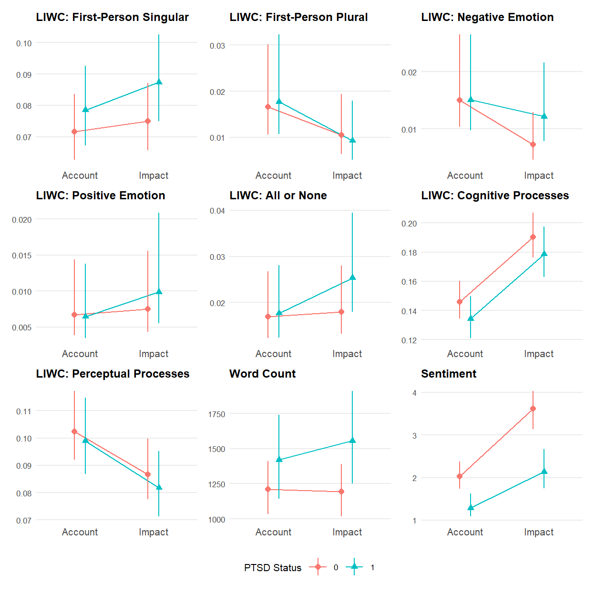
ggsave("verbal.pdf", width = 6.5, height = 6.5, units = "in")walk(
names(all_models),
\(x) {
if (x == "Sentiment") {
# performance::check_predictions() relabels ordinal draws with all six
# response levels and errors when a draw spans fewer, so use brms directly
print(brms::pp_check(all_models[[x]], type = "bars", ndraws = 100))
} else {
print(check_predictions(all_models[[x]], type = "density", allow_new_levels = TRUE))
}
}
)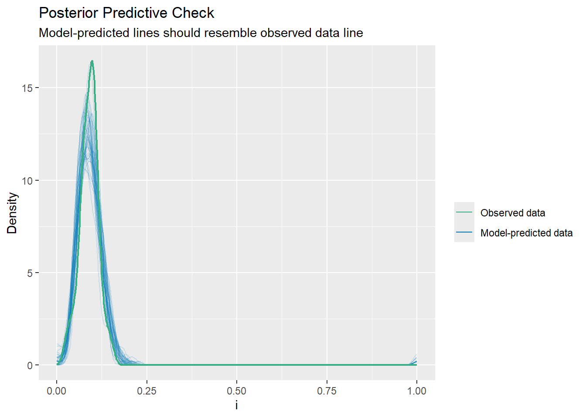
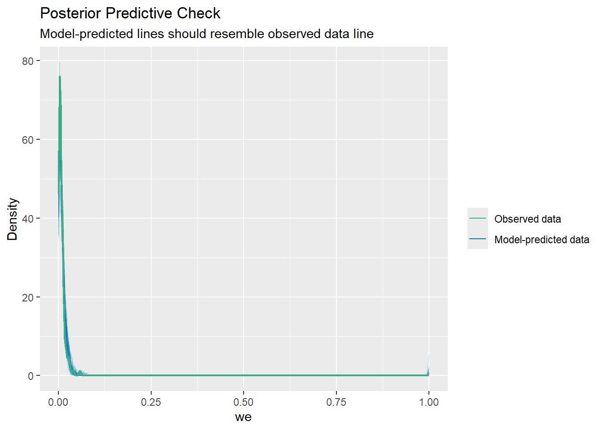
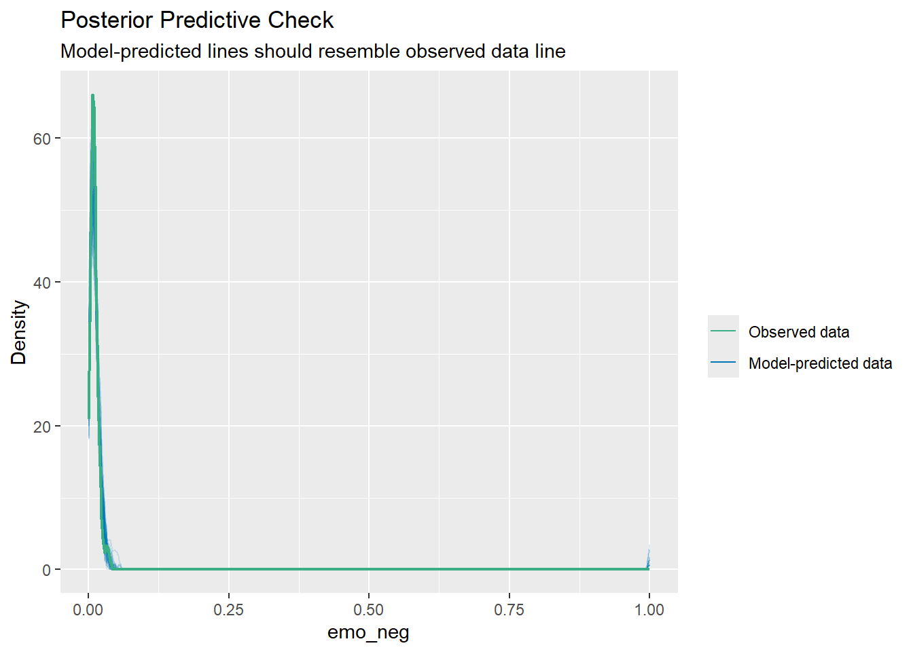
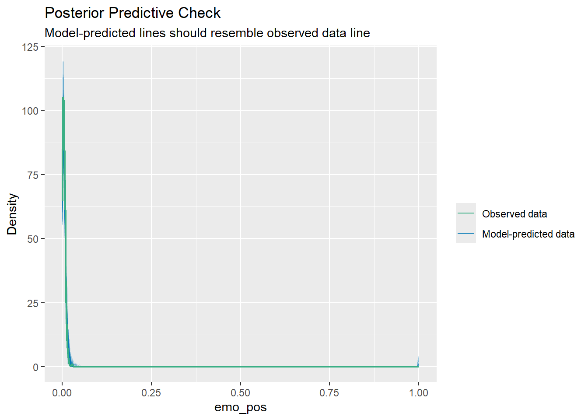
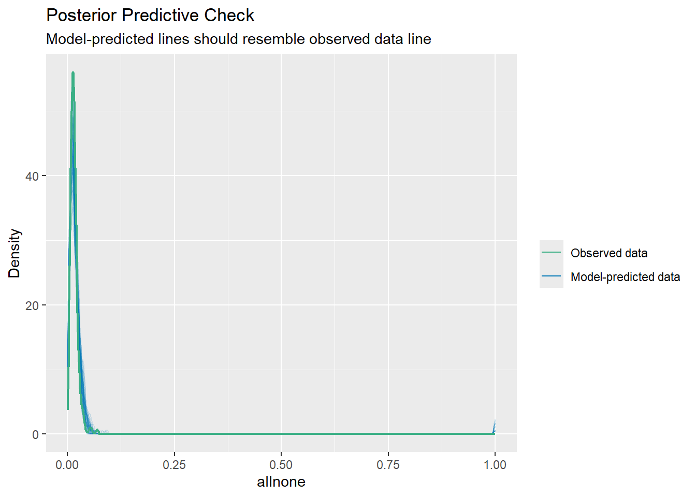
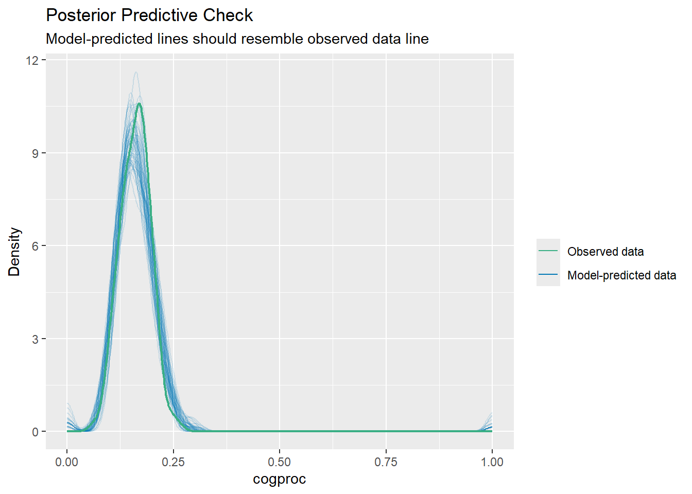
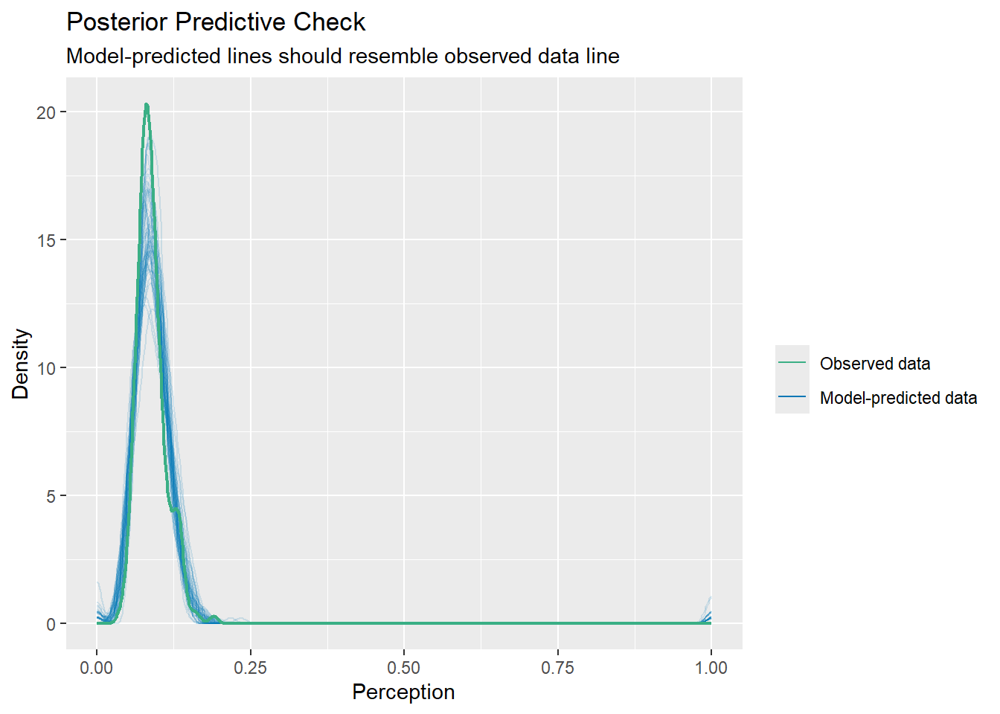
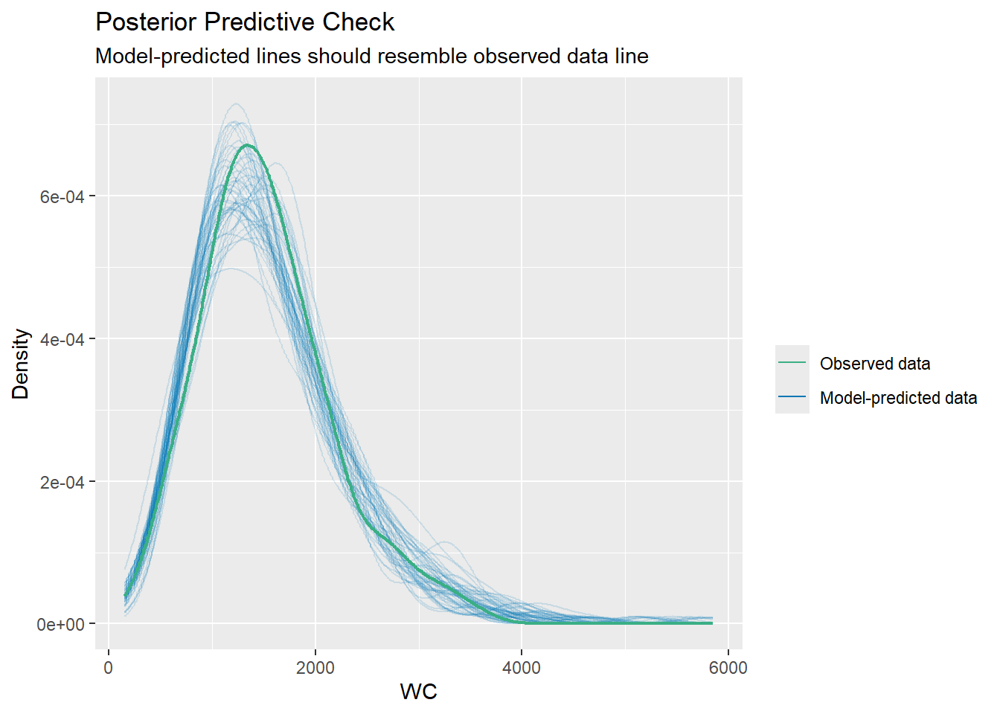
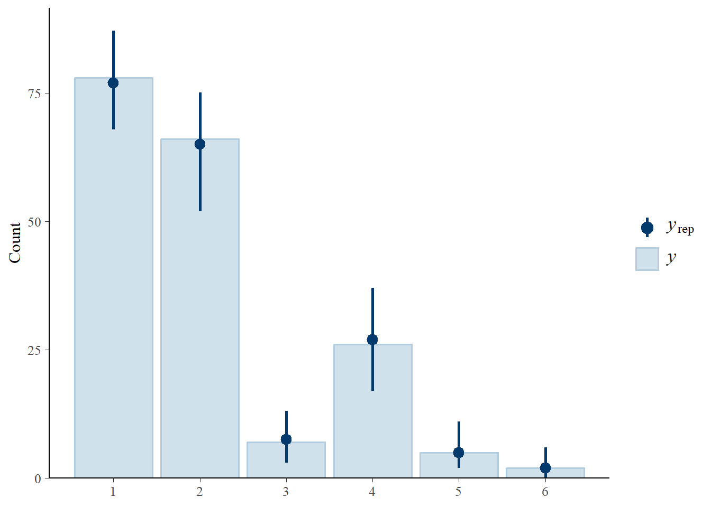